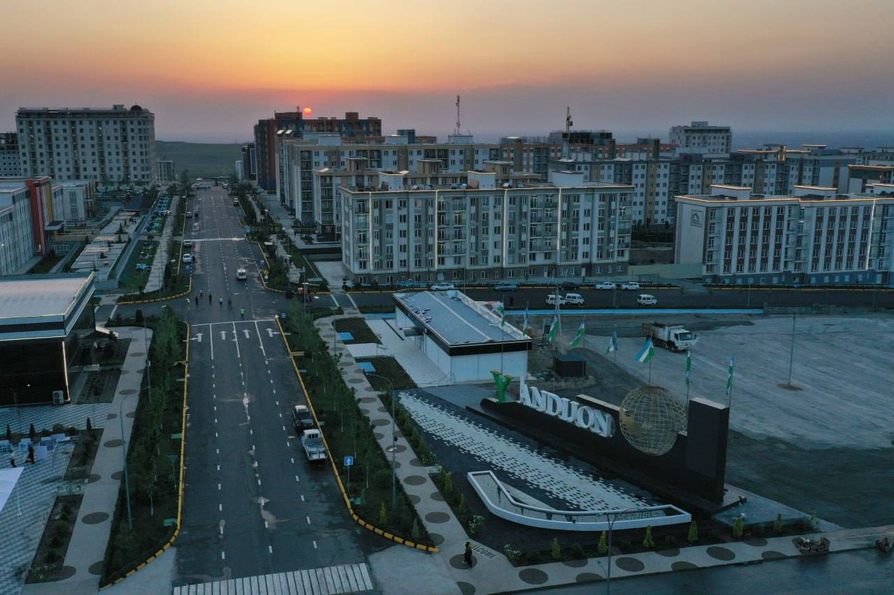
01 / ANDIJAN
アンディジャン州
中心都市はアンディジャンです。東部のフェルガナ盆地にあります。
ウズベキスタンの12州と、それぞれの中心都市を写真で紹介します。

中心都市はアンディジャンです。東部のフェルガナ盆地にあります。
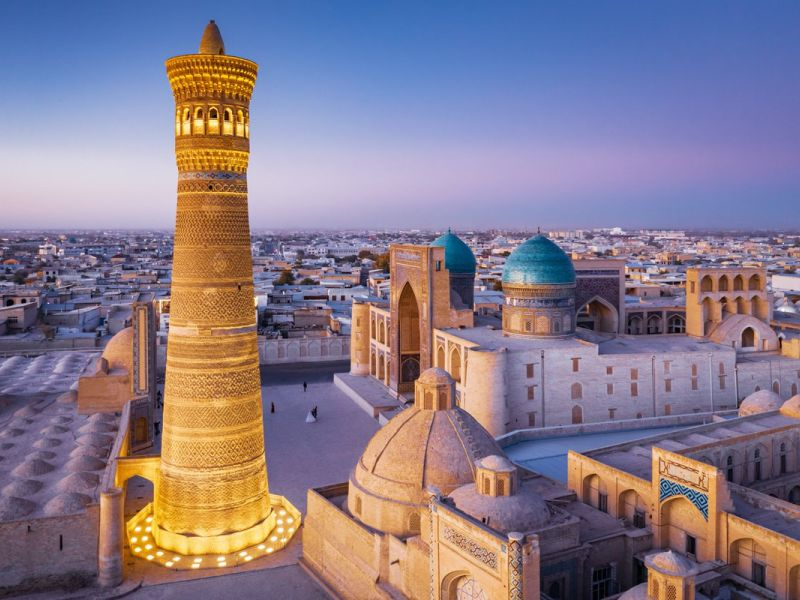
中心都市のブハラは、歴史ある旧市街で知られています。
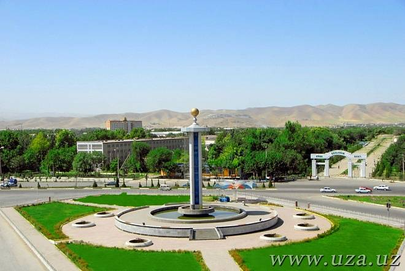
中心都市はジザフです。山脈の景色も楽しめます。
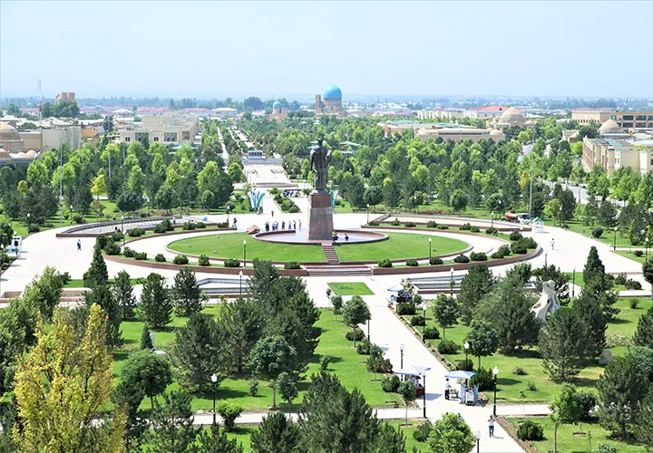
中心都市はカルシです。南部の歴史と自然に出会えます。
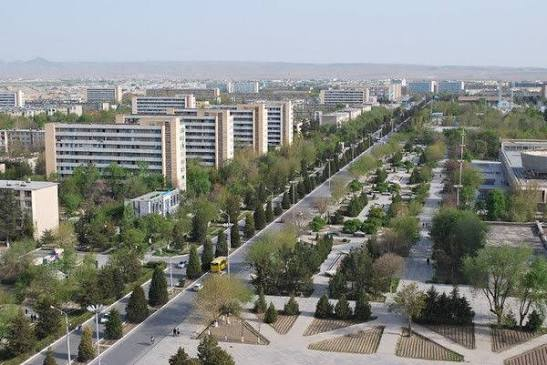
中心都市はナヴォイです。砂漠や自然が広がる州です。
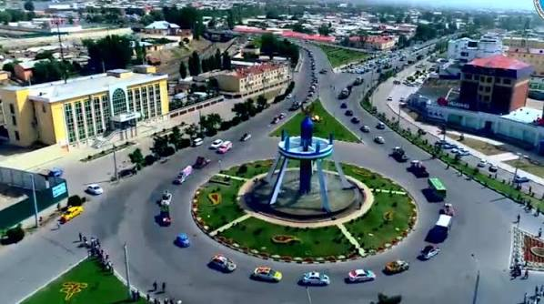
中心都市はナマンガンです。花や庭園でも親しまれています。
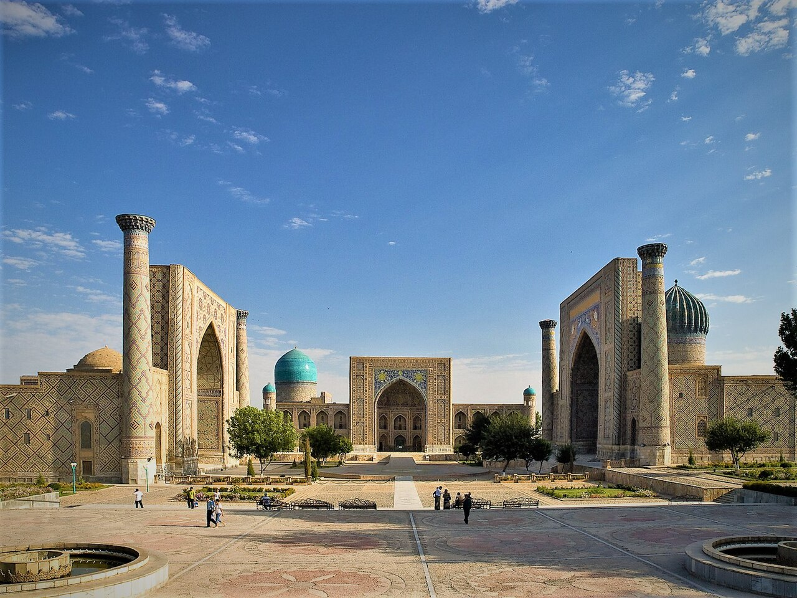
中心都市はサマルカンドです。青いタイルで彩られた建築で知られています。
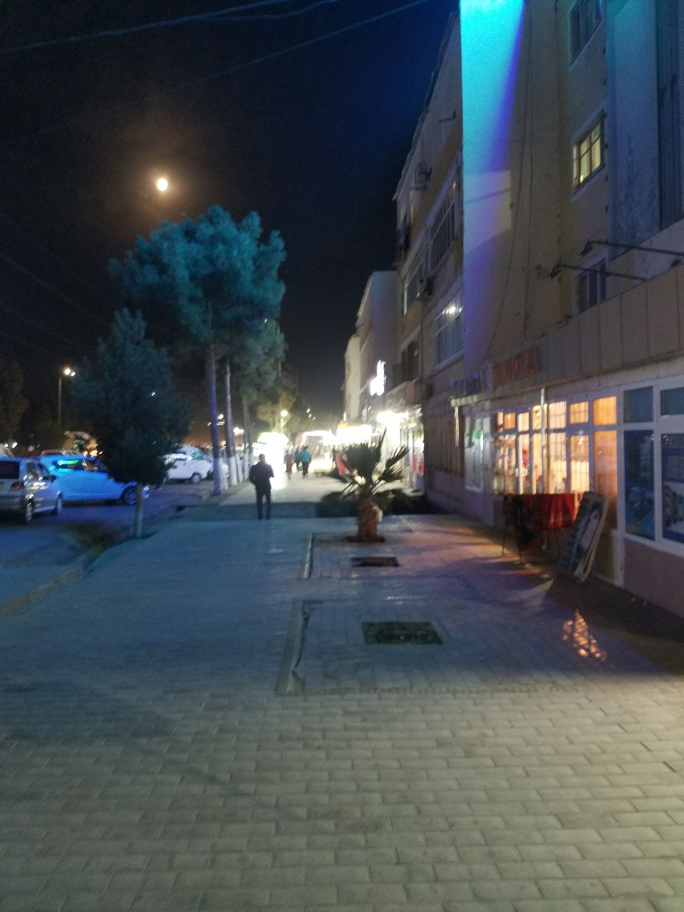
中心都市はテルメズです。古代の歴史を感じられる街です。
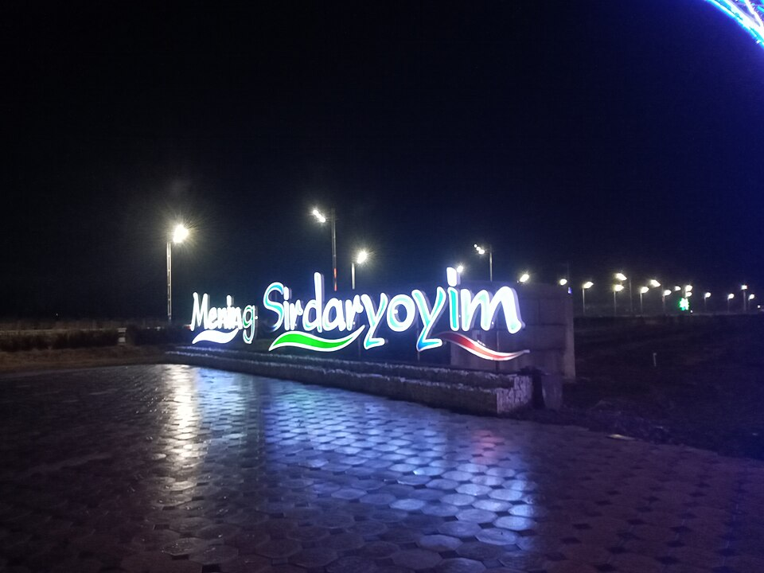
中心都市はグリスタンです。シルダリヤ川の近くです。
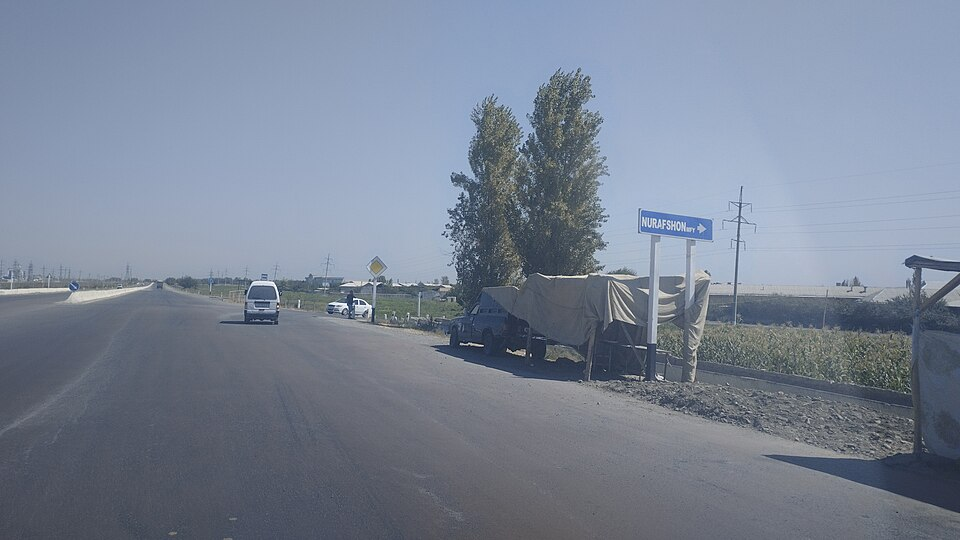
州の中心都市はヌラフシャンです。首都とは別の州です。
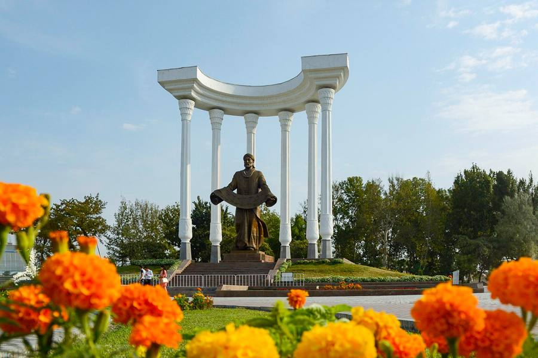
中心都市はフェルガナです。盆地の農産物や工芸品で知られます。
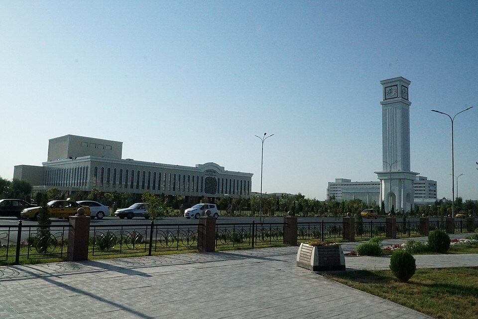
中心都市はウルゲンチです。ヒヴァの近くにあります。